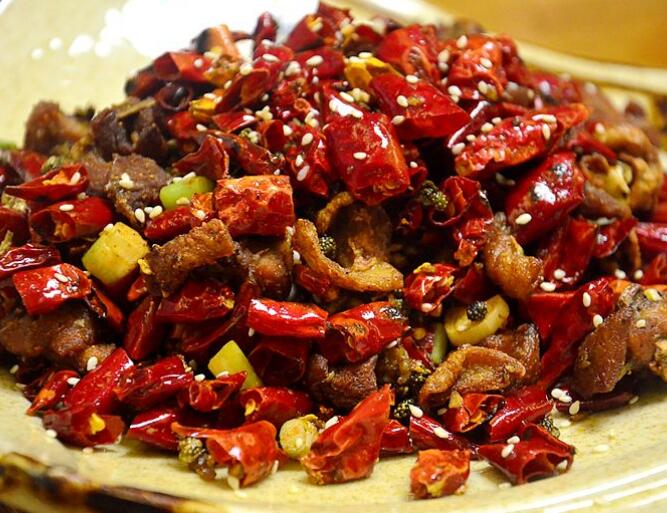

山东菜可分为济南风味菜、胶东风味菜、孔府和其他地区风味菜，并以济南菜为典型，煎炒烹炸、烧烩蒸扒、煮氽熏拌、溜炝酱腌等有50多种烹饪方法。
济南菜以清香、脆嫩、味厚而纯正著称，特别精于制汤，清浊分明。
胶东风味亦称福山风味，包括烟台、青岛等胶东沿海地方风味菜。该菜精于海味，善做海鲜，珍馔佳品，肴多海味，且少用佐料提味。
孔府菜做工精细，烹调技法全面，尤以烧、炒、煨、炸、扒见长，而且制作过程复杂。以煨、炒、扒等技法烹制的菜肴，往往要经过三四道程序方能完成。
经典代表菜系有：葱烧海参、糖醋鲤鱼、九转大肠、油焖大虾、醋椒鱼、糟熘鱼片、温炝鳜鱼片、芫爆鱿鱼卷、清汤银耳、木樨肉、胶东四大、糖醋里脊、红烧大虾、招远蒸丸、枣庄辣子鸡、清蒸加吉鱼、葱椒鱼、糖酱鸡块、油泼豆莛等。
中国八大菜系

川菜在原有的基础上，吸收南北菜肴之长及官、商家宴菜品的优点，形成了北菜川烹、南菜川味的特点，享有“食在中国，味在四川”的美誉。
川菜讲究色、香、味、形，在“味”字上下功夫，以味的多、广、厚著称。川菜口味的组成，主要有“麻、辣、咸、甜、酸、苦、香”7种味道。有麻辣、酸辣、红油、白油等几十种各具特色的复合味，有“一菜一格，百菜百味”的称誉。
川菜在烹调方法上，善于根据原料、气候和食者的要求，具体掌握，灵活运用。38种川菜烹调方法中，现在流行的仍有炒、煎、炸、烧、腌、卤、煸、泡等30多种。在烹调方法中，特别、以小煎干烧、干煸见长。
川菜代表菜有：干烧岩鲤、干烧桂鱼、鱼香肉丝、怪味鸡、宫保鸡丁、粉蒸牛肉、麻婆豆腐、毛肚火锅、干煽牛肉丝、夫妻肺片、灯影牛肉、担担面、赖汤圆、龙抄手等。
广东菜简称粤菜。由广（也称广府菜）、潮州菜（也称潮汕菜）、东江菜（也称客家菜）三种地方风味组成，三种风味各具特色。
广州菜范围包括珠江三角洲和肇庆、韶关、湛江等地，用料丰富，选料精细，技艺精良，清而不淡，鲜而不俗，嫩而不生，油而不腻。擅长小炒，要求掌握火候和油温恰到好处。还兼容了许多西菜做法，讲究菜的气势、档次。潮州菜发源于潮汕地区，汇闽、粤两家之长，自成一派。以烹制海鲜见长，汤类、素菜、甜菜最具特色。刀工精细，口味清纯。东江菜起源于广东东江一带的客家人聚居地区，菜品多用肉类，极少水产，主料突出，讲究香浓，下油重，味偏咸，以砂锅菜见长，有独特的乡土风味。
经典粤菜有：白切鸡、烧鹅、烤乳猪、红烧乳鸽、蜜汁叉烧、上汤焗龙虾、清蒸石斑鱼、阿一鲍鱼、鲍汁扣辽参、白灼虾、椰汁冰糖燕窝、菜胆炖鱼翅、麒麟鲈鱼等。
福建菜俗称闽菜，以福州菜为代表，素以制作细巧、色调美观、调味清鲜著称。 福建菜以海鲜类为主，口味方面则咸、甜、酸、辣、香具备，咸的调味品有虾酱、虾油、豉油等；甜的有红糖、冰糖等；酸的有白醋、乔头等；辣的有胡椒、芥末等；香的有红糖、五香粉、八角、桂皮等。
福建菜也有煎、炸、炻（如煮）、烤、炖、拌、醉、卤、扒、糟、煨、扣、溜、炒、熏、焖、扛、腌、炝等，其中最具特色的是糟，有扛糟、炝糟、爆糟、炸糟之分。
代表菜有：佛跳墙、鸡汤氽海蚌、淡糟香螺片、沙奈焖鸭块、七星鱼丸、糟醉鸡、煎糟鳗鱼、半月沉江、燕皮馄饨、福州线面、蚝仔煎等等。
江苏的历代名厨造就了苏菜风格的传统佳肴，而“天堂”美誉的苏州和“壮丽东南第一州”的运河之都淮安以及被史家叹为“富甲天下”的扬州则是名厨美馔的摇篮。苏菜正是以这三方风味为主汇合而成的。
苏菜有如下几个特点：一是选料严谨，制作精细；二是擅长炖、焖、煨、焐、蒸、烧、炒等烹饪方法；三是口味清鲜，咸甜得宜，浓而不腻，淡而不薄；四是注重调汤，保持原汁。苏州菜口味趋甜，刀工精细，火候精微，色调清新，造型别致，突出主料，强调本味，清淡可口，适应面宽，尤以擅长制汤而著称。其代表菜有：大煮干丝、扬州狮子头、叫花鸡、水晶虾仁等。

浙江菜简称浙菜，是浙江地方风味菜系。
浙江是江南的鱼米之乡。浙菜有如下几大特征：一是用料广博，配伍严谨。主料注重时令和品种，配料、调料；二是刀工精细；三是火候调味，最重适度；四是清鲜嫩爽，滋、味兼得；五是浙菜四支，风韵各具。
浙江菜主要由杭州、宁波、绍兴、温州四支地方风味菜组成。杭州菜制作精细，清秀隽美，擅长爆、炒、烩、炸等烹调技法，具清鲜、爽嫩、精致、醇和等特点。宁波地方厨师尤善制海鲜，技法以炖、烤、蒸著称，口味鲜咸适度，菜品讲究鲜嫩爽滑，注重本味。绍兴菜品香酥绵糯，汤浓味醇，富有水乡古城之淳朴风格。温州菜也称瓯菜，瓯菜则以海鲜人馔为主，口味清鲜，淡而不薄，烹调讲究“二轻一重”，即轻油、轻芡、重刀工。

湘菜又称湖南菜，由于湖南民丰物博，向称鱼米之乡。
湘菜以腴滑肥润为主，多将辣椒当主菜食用，不仅有北方的咸，也有南方的甜，湘菜特别讲究原料的入味，技法多样，有烧、炒、蒸、熏等方法。湘菜的特殊料有豆豉、茶油、辣油、辣酱、花椒、茴香、桂皮等。湘菜以辛辣著称。
徽菜起源于南宋时期的徽州府（今安徽省黄山市一带，府治在今安徽歙县），原是徽州山区的地方风味。主要名菜有火腿炖甲鱼、红烧果子狸、腌鲜鳜鱼、黄山炖鸽等。
当年的徽菜，由于红烧是一大类，而红烧的“红”，表现在糖色上面。对火功要求苛刻。炒菜用油是自种自榨的菜籽油，并使用大量木材作燃料：有炭火的温炖，有柴禾的急烧，有树块的缓烧，是比较讲究的。传统中的重油、重色、重火功，有徽州的特殊条件。
当徽菜走向全国之后，仍然保持重色：调色之功；重油：调味之功；重火功：调质之功。如老或嫩，硬或软，结或松等。徽菜的烹饪技法，包括刀工、火候和操作技术，徽菜之重火工是历来的优良传统，其独到之处集中体现在擅长烧、炖、熏、蒸类的功夫菜上，不同菜肴使用不同的控火技术是徽帮厨师造诣深浅的重要标志，也是徽菜能形成酥、嫩、香、鲜独特风格的基本手段，徽菜常用的烹饪技法约有20大类50余种，其中最能体现徽式特色的是滑烧、清炖和生熏法。